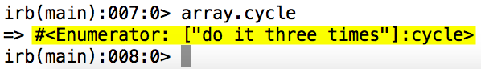

Everything you need to know about Enumerable#cycle
March 19, 2015
#cycle is an iterator, like #each or #collect, that cycles over an object over and over again until you tell it to stop.
Important #cycle Properties To Remember
- This method takes an argument AND a code block
- The argument you pass to #cycle determines the number of times it'll cycle through the receiver. If you don't pass an argument, it'll cycle through the receiver forever!
- If you opt not to pass a code block to #cycle, it'll return an enumerator
Let's Unpack These Properties
To demonstrate how #cycle functions, let's take the the array "a" and #cycle through it three times. To do that we'll need to pass it an argument of 3 and specify a code block that allows us to print out each cycle with "puts"
a = ["Print me 3 times!"]
a.cycle(3) { |x| puts x }
Print me 3 times!
Print me 3 times!
Print me 3 times!If you decide not to pass an argument then the iterator will become an infinite loop and cycle through the object forever and ever and ever, like so:
a = ["Print me forever!"]
a.cycle { |x| puts x }
Print me forever!
Print me forever!
Print me forever!
Print me forever!
Print me forever!
Print me forever!
...
program crashes
If you don't pass a code block to #cycle it'll simply return an enumerator. What's an enumerator?
"A good way to describe Enumerator objects is that they contain the information about how to iterate through a collection. For example, a #cycle Enumerator knows how to iterate through a collection one or more times, while a #reverse_each Enumerator knows how to iterate through a collection backwards." - Sitepoint.com
This is what the return value looks like in irb:
Why you would ever call #cycle on an object without a code block? I have no idea, but at least now we know what happens.